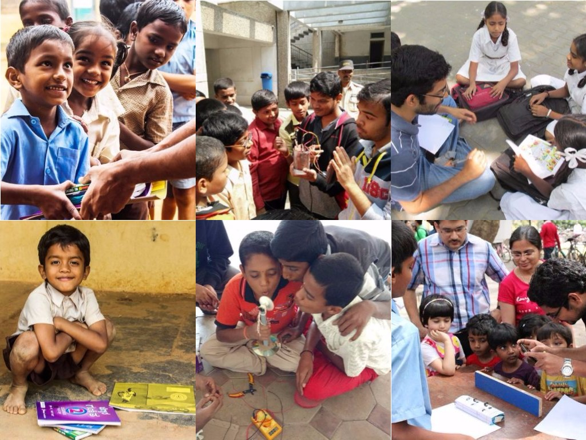

NoteBook Drive
Welcome!!!
About NBD
NoteBook Drive, IISc (NBD) is a student-run voluntary organization of IISc working towards improving quality of education in underprivileged government schools in and around Bangalore. The motive of NBD is to facilitate learning by exposing school children to the joy of discovery, and also to provide basic infrastructure wherever possible and necessary. In 2002, a group of IISc students decided to do their bit, and NBD started with notebook distribution in a single government school inside the IISc campus. Dedicated efforts by volunteers over more than a decade have enabled NBD to spread its wings into a multitude of activities. NBD now covers 35 government schools, and is spurring initiatives such as Notebook Distribution to primary and higher primary schools, Scholarship initiative for students to continue their higher education beyond SSLC, English-Computer-Maths-Science classes and Children’s day celebration to enhance students’ abilities in different aspects, Career guidance, Free Eye-camps, Teachers Training Program, and much more.
NBD has evolved and been able to sustain over the years due to the constant support of IISc student community, faculty, alumni, and IISc-AANA (IISc Alumni Association of North America).
We welcome participation from passionate individuals in IISc to help us make this program more effective.
To know more kindly email at notebookdrive.iisc@gmail.com.
A brief video about NBD..
Go To IISc NBD's webpage